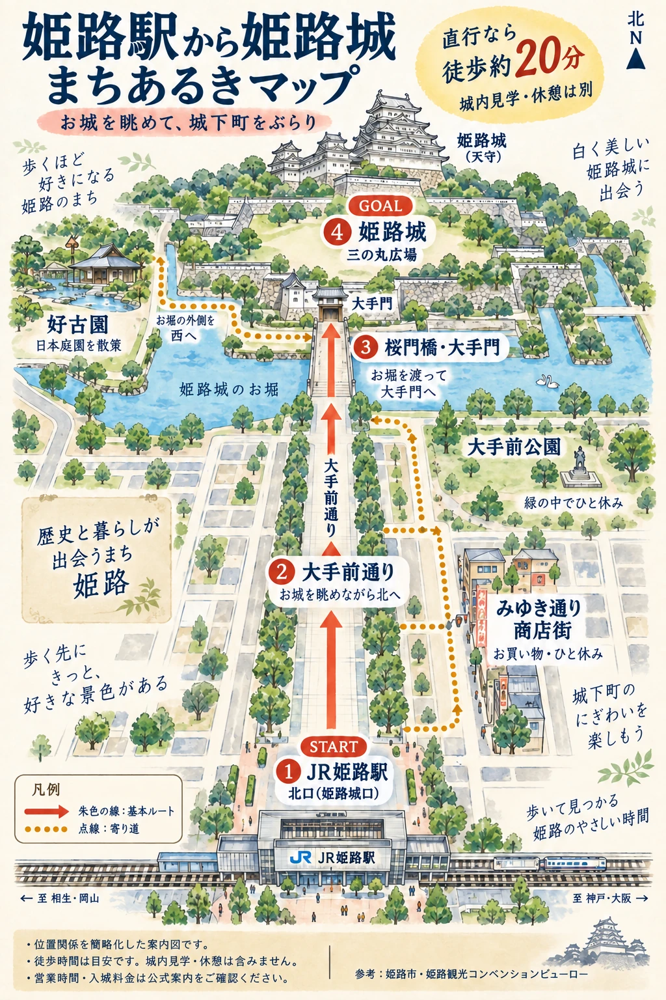

天守群を上から見た配置の模式図。屋根の形状・建物の大きさは説明のため簡略化しています。
天守群を上から見た配置の模式図。屋根の形状・建物の大きさは説明のため簡略化しています。
 赤が東西の大柱。床・横架材との関係を示す模式図です。柱や梁の本数、屋根の細部、各部の寸法は実測図を再現したものではありません。
赤が東西の大柱。床・横架材との関係を示す模式図です。柱や梁の本数、屋根の細部、各部の寸法は実測図を再現したものではありません。
柱だけでなく、横につなぐ材にも目を向ける
二本の大柱は、各階の横架材と結ばれています。太い柱そのものに加えて、横に延びる材がどう組み合わさるのかを見ると、外からは見えない木造の骨組みに気づきます。
西大柱の継ぎ目と、四つのまとまり
西大柱は3階部分で二本の材を継いでいます。一方、天守の構造は「地階〜2階」「3階」「4階」「5階〜6階」という四つのまとまりで捉えられ、大柱と横架材がそれらを結びます。
図では継ぎ目の位置を示しています。実際の継手の加工形状は省略しています。
 撮影：田路昌也 / 最上階からの眺め第二十八景「天守の窓辺 鯱瓦と夜景」へ
撮影：田路昌也 / 最上階からの眺め第二十八景「天守の窓辺 鯱瓦と夜景」へ
参考：姫路城公式ガイド p.47「大通し柱構法」（PDF）、兵庫県立歴史博物館「姫路城」
- 所在地
- 兵庫県姫路市本町68番地
- 最寄り駅
- JR姫路駅・山陽姫路駅
- 歩く時間の目安
- 駅から徒歩約20分。城内見学・撮影・寄り道の時間は別に見込んでください。
徒歩時間は姫路城公式のアクセス案内を参照しています。
関西の中の姫路、駅から見たお城
まずは広い範囲で位置を確かめてから、駅とお城の距離感を見てみましょう。姫路城は、JR姫路駅・山陽姫路駅の北側にあります。
Google マップで姫路城を見る
駅から、お城を眺めて歩く
JR姫路駅の北口を出て、大手前通りを北へ。まずはお城を目印に歩き、桜門橋・大手門から三の丸広場へ向かいます。

AIを用いて制作した散策のイメージ図です。建物の形・縮尺・道の位置は簡略化しています。実際の経路は地図アプリと現地の案内でご確認ください。
- JR姫路駅 北口
姫路城口から、大手前通りへ。
- 大手前通り
お城の見え方の変化を楽しみながら北へ。
- 桜門橋・大手門
お堀を渡り、お城の敷地へ。
- 三の丸広場
まずは天守を見上げて一枚。城内見学は、さらに入城口へ進みます。
訪問前の確認：姫路城公式「ご利用案内・アクセス」。開城時間・料金・通行できる範囲などは、最新の公式案内をご確認ください。

{kind=link}
{kind=link}